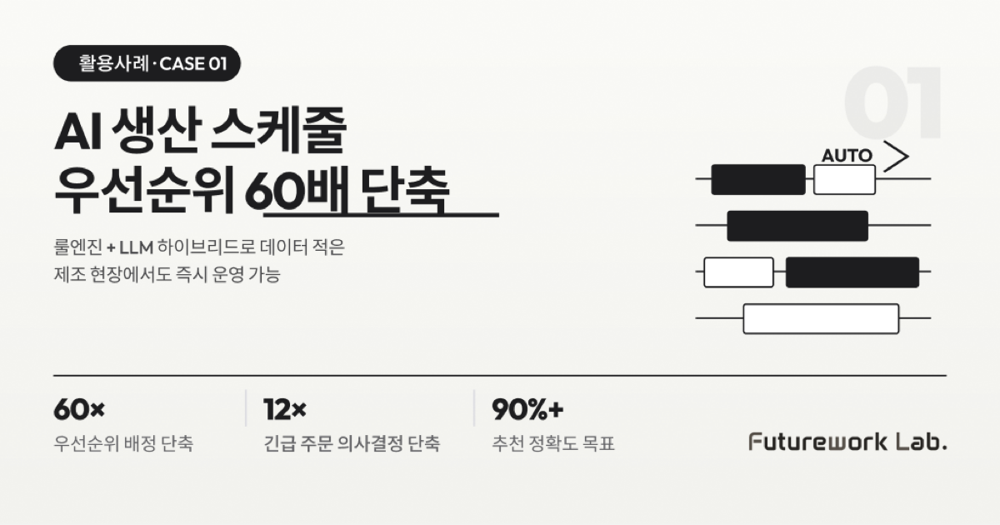

본 사례는 매출 4~5천억 원 규모 중견 정밀가공·사출 제조사 다인전공과 함께 진행한 AI 생산 스케줄 자동 추천 프로젝트를 기반으로 정리했습니다. 비상경영 체제 속에서 생산 스케줄링의 구조적 문제를 해결한 과정을 공유합니다.
왜 스케줄링이 문제였는가 — 5가지 구조적 결함
이 회사는 매출 규모는 컸지만, 생산 스케줄링 영역에서 다음 5가지 문제를 동시에 안고 있었습니다.
- 우선순위 기준 부재: 작업지시서 발행 후 우선순위를 매기지만, 파트장은 "기준이 있다"고 하고 실무자는 "들어본 적 없다"고 응답합니다. 조직 전체에 규정화되지 않은 채 납기일 또는 선입선출로 임의 운영되고 있었습니다.
- 작업 시작 시점 정보 없음: 작업지시서에 납기 예정일만 존재하고, 언제 시작해야 하는지 정보가 없어 현장 작업반장이 임의로 결정합니다. 결과적으로 납기 미준수가 빈번히 발생합니다.
- 현장 가시성 부재: 설비 모니터링은 단순 신호등(파란불·빨간불) 수준이고, 어떤 작업을 수행 중인지 알 수 없습니다. 기존 운영 시스템은 과거 추적만 가능하고 미래 예측은 불가능했습니다.
- 셋업 시간 미고려: 자재 준비·설비 셋업 시간이 생산 계획에 반영되지 않아, 기존 APS(고도 생산계획 시스템) 도입이 실패한 주요 원인이 되었습니다.
- 긴급 주문 대응 불가: 긴급 주문이 삽입될 때 기존 스케줄에 미치는 영향도를 데이터 기반으로 예측할 수 없었습니다.
해결 방향 — "AI는 추천만, 결정은 사람이"
핵심 기능은 두 가지로 좁혔습니다. 첫째, 납기 기반 우선순위 자동 추천입니다. 납기 임박도, 설비 가용성, 멀티 공정 의존도라는 KPI 3축을 기반으로 최적 배치 순서를 추천합니다. 둘째, 긴급 주문 영향도 분석 및 재배치 시나리오입니다. 긴급 주문이 삽입되면 2~3개의 재배치 시나리오와 지연 일수를 정량 분석으로 제공합니다.
기술 선택 — 룰엔진 + LLM 하이브리드
중요한 결정은 ML(머신러닝)을 즉시 도입하지 않고 룰엔진으로 시작한 것입니다. 이유는 단순합니다. 고객사에 체계적 스케줄링 실적 데이터가 축적되어 있지 않아 ML을 즉시 적용하기 어려웠기 때문입니다. 룰엔진으로 즉시 운영 가능한 시스템을 만들고, 작업 완료 시 별점·만족도 피드백으로 Ground Truth(정답 데이터)를 3~6개월간 축적한 뒤 ML 모델로 보완하는 단계적 경로를 설계했습니다. 3년 후 종국 목표는 룰엔진 폐기 후 AI 추천 단독 운영입니다.
| 구성 요소 | 역할 |
|---|---|
| 상태머신 룰엔진 | 납기 우선순위, 설비 부하 균등화, 이벤트 분기 처리 |
| 그래프 데이터베이스 | 공정 라우팅 DAG 저장, 긴급 주문 시 연쇄 영향 전파 분석 |
| 예상 완료일 계산 모듈 | 시나리오별 KPI 산출 |
| 외부 LLM API | 배치 결과·영향도 분석 자연어 설명 생성 |
| 벡터 데이터베이스 | 피드백·이력 데이터 저장 |
4가지 허들과 해결 과정
| 허들 | 문제점 | 해결 |
|---|---|---|
| ① 학습 데이터 미축적 | 과거 스케줄링 실적 데이터가 체계적으로 없어 ML 즉시 적용 불가 | 룰엔진 선행 운영 + 작업지시 완료 시 필수 피드백 수집(별점·만족도 데이터로 Ground Truth 축적), 3~6개월 후 ML 모델로 보완 |
| ② 셋업 시간 미고려 (기존 APS 실패 원인) | 표준 공수 안에 셋업 공수가 숨어 있어 정확한 소요시간 파악 불가 | 표준 공수 재정의 시 셋업 공수를 명시적으로 분리, AI 엔진이 공정별·설비별 소요 시간을 명확히 계산 |
| ③ 데이터 인터페이스 갭 | "AI에 필요한 데이터"와 고객사 운영 시스템에 보유된 데이터 간 불일치 | 본 사례에서는 비컴이 운영하는 MES를 통해서만 AI 엔진이 데이터 수신(교집합 방식 확정), 자원관리(ERP) 시스템 직접 연동 X |
| ④ UI/UX 사용자 수용성 | "AI 추천을 바로 실행할지" vs "사람이 선택하게 할지" 기준 불명확 | 채팅형이 아닌 버튼형 인터페이스 확정, 시나리오 2~3개 미리 생성해 사용자가 비교 후 선택 |
결과 — 정량 개선 수치
| 지표 | 기존 | 개선 | 비고 |
|---|---|---|---|
| 우선순위 배정 시간 | 수작업 ~1시간/일 | 자동 추천 1분 이내 | 60배 단축 |
| 우선순위 추천 정확도 | 없음(임의) | 90% 이상 | — |
| API 응답 시간 | — | 3초 이하 | — |
| 영향도 분석 F1 스코어 | 불가 | 85% 이상 | — |
| 납기 지연 감지율 | 불가 | 80% 이상 | — |
| 긴급 삽입 의사결정 시간 | 경험 기반 ~2시간 | AI 분석 ~10분 | 12배 단축 |
AX Flow와의 연결 — Execute · Connect 레이어
본 사례는 AX Flow의 4-Layer 운영 구조 중 Execute와 Connect 레이어가 핵심으로 작동한 사례입니다. Execute 레이어의 멀티 에이전트 오케스트레이션이 룰엔진 기반 우선순위 추천과 LLM 기반 영향도 분석을 하나의 파이프라인으로 묶어 1분 이내 의사결정을 가능하게 했습니다. Connect 레이어는 MES 단일 진실 소스 인터페이스를 표준화해 데이터 정합성 비용을 차단했습니다. 데이터가 축적되면 같은 Execute 레이어 위에 ML 추천 모듈을 점진적으로 추가할 수 있도록 설계되어, 룰엔진 단계에서 ML 단계로의 전환 비용도 최소화됩니다.
해당 사례 시사점 3가지 — 제조 AI 도입
첫째, 데이터가 없으면 ML을 강행하지 마십시오. 룰엔진으로 즉시 운영하면서 데이터를 축적하는 경로가 더 빠른 ROI를 만듭니다.
둘째, AI 인터페이스는 현장에 따라 채팅이 아닌 버튼이 맞는 경우가 있습니다. 현장에 따라 작업자는 시나리오 비교·선택 패턴에 익숙할 수 있습니다. 자유 대화는 학습 부담을 늘릴 수 있어, 도입 전 현장 작업 패턴을 먼저 진단하는 것이 안전합니다.
셋째, 본 사례에서는 운영 시스템 1개로 데이터 경로를 좁히는 방식이 유효했습니다. 자원관리·생산관리·품질 시스템을 모두 직접 연동하면 데이터 정합성 비용이 폭증할 위험이 있고, 본 사례처럼 생산관리 시스템 한 곳을 단일 진실 소스로 두는 방식이 PoC 단계에서 정합성 비용을 크게 낮췄습니다. 다만 이는 모든 환경의 정답은 아닙니다. 특화 공정(예: 반도체 클린룸의 sub-millisecond 실행 로직)이나 일정 규모 이상의 다중 도메인 기업에서는 Unified Namespace, Data Mesh, 또는 복수의 단일 진실 소스 운영 등 다른 접근이 더 적합할 수 있습니다. 자사 환경의 도메인 복잡도와 규모를 먼저 진단한 뒤 단일·분산 전략을 선택하는 것이 안전합니다.
"AI는 판단하지 않고, 선택지를 계산한다." — 본 사례에서 확립한 운영 원칙이며, 이후 다른 활용사례에도 동일하게 적용됩니다.
함께 읽으면 좋은 글
- AI 문서 검토·교정·비교 — PM 월간 검토 시간 85% 감소
- 제조 공정 조건 최적화 — 김 제조 불량률 84% 감소, 연 9,800만 원 절감
- 제조 특화 RAG 지식 그래프 — 비정형 문서를 검색 가능한 지식으로
- 제조AI특화 스마트공장 완벽 가이드 — 800억 원, 400개 기업 선정 전략
본 사례는 AX Flow Usecase 자료 p.1~2 (Case 1) 기반으로 작성되었습니다.
#AI생산스케줄 #제조스케줄링AI #생산우선순위자동추천 #긴급주문영향도분석 #MES연동AI #룰엔진LLM하이브리드 #제조AI활용사례 #APS한계극복 #납기관리AI #제조DX